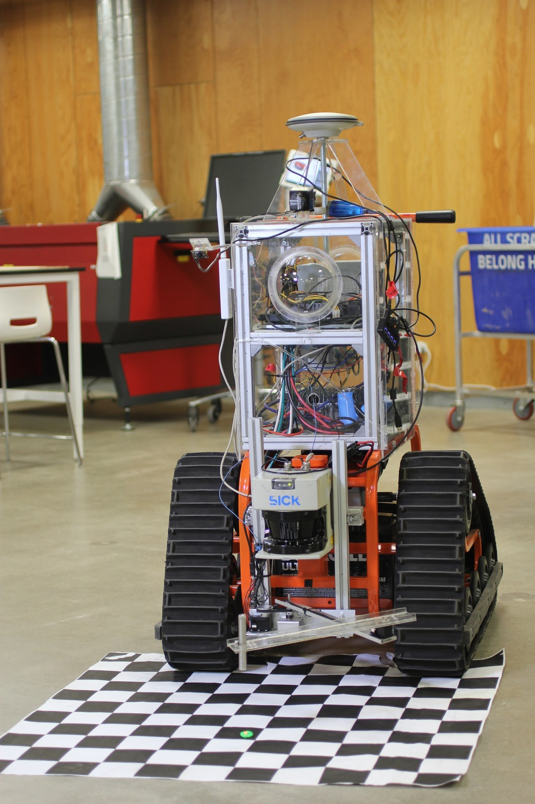
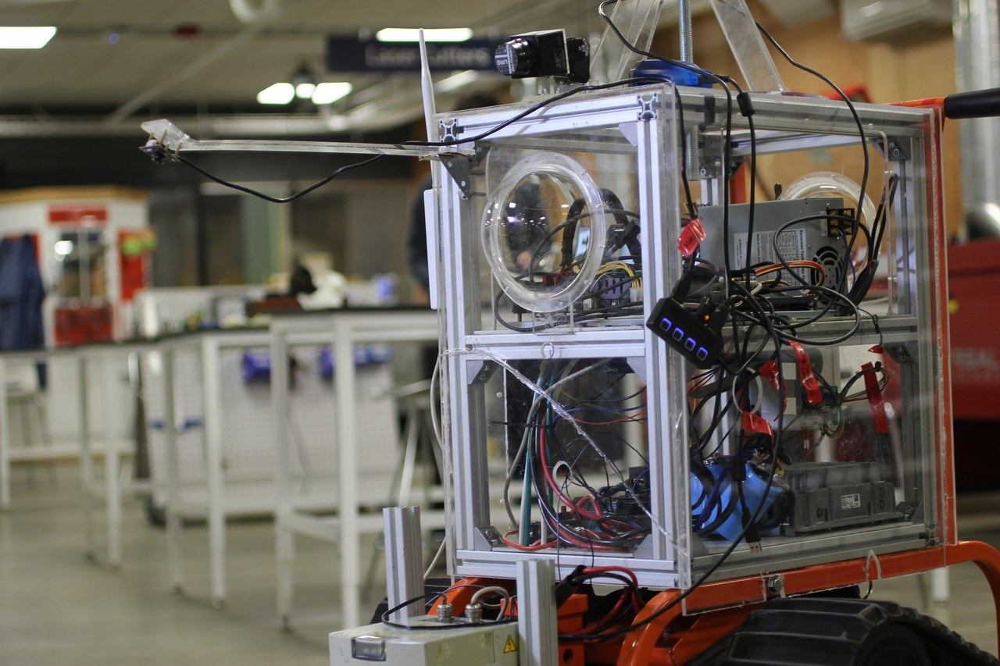

##[Home](../index.html) | [Portfolio](../index.html#portfolio)
---
<!--Slideshow-->
<div class="w3-content" >
<div class="w3-display-container mySlides">

<div class="w3-display-bottomleft w3-large w3-container w3-padding-16 w3-black">
BABS in my Senior Project Configuration
</div>
</div>
<div class="w3-display-container mySlides">

<div class="w3-display-bottomleft w3-large w3-container w3-padding-16 w3-black">
BABS Control System Closeup
</div>
</div>
</div>
<button class="w3-button w3-display-left w3-black" onclick="plusDivs(-1)">&#10094;</button>
<button class="w3-button w3-display-right w3-black" onclick="plusDivs(1)">&#10095;</button>
<!--Markdown Content goes here-->
## Bayesian Autonomous Broadcasting Sentry (BABS)
This robot is called the Bayesian Autonomous Broadcasting Sentry(BABS) Research Robot Platform. It was originally used in an autonomous sentry project for the Air Force, but it was transitioned for use for senior capstone projects. This included my senior project. While I can't discuss the my senior project due to a NDA, I can talk about BABS as a general robot platform.&nbsp;
**The Robot**
The chassis and other structural components were fabricated in the CWRU think[box] makerspace. BABS has a tank tread drive train for movement and a two degree-of-freedom (DOF) arm for marking or manipulation. It also uses a front facing LIDAR and 2 wobbling LIDAR located on both ends of the chassis for object detection. On top of BABS is a GPS antenna with the GPS transceiver located inside the chassis. For computer vision, there are two fish-eye lenses cameras on each end of the chassis and a thermal camera in the front. A camera was also retrofitted above the two DOF arm to provide further vision coverage. BABS is controlled with a Ubuntu system running the Robotic Operating System (ROS).&nbsp;
**Using the Robot**
Overall, using the robot was a decent experience except for a couple minor complaints. Due to the two level internal compartments, wiring and re-wiring the robot was frustrating at times. Eventually I resorted to drilling a 1/2" hole in the side to improve accessibility for wiring. A more critical issue involved the computer system. There was a specific incident where the battery died while the computer was still on, corrupting the hard drive. This forced us to reinstall the OS and resulted in a several days of lost time. Despite these issues, this robot got the job done. It wasn't pretty, but BABS got it done.&nbsp;
On a side note, this robot is really fun to drive. Here's me driving thru a bunch of tetris blocks.&nbsp;
<iframe width="100%" height="500" id="youtube_iframe" src="https://www.youtube.com/embed/TmU2cMWAnos?feature=oembed&amp;enablejsapi=1&amp;origin=https://safe.txmblr.com&amp;wmode=opaque" frameborder="0" allowfullscreen="allowfullscreen"></iframe>
<!--Footer-->
---
##[Home](../index.html) | [Portfolio List](../index.html#portfolio)
&copy; Jerray Dewa. All rights reserved.